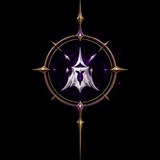
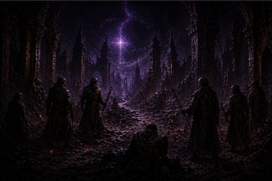

1358 CV
O Tempo das Perturbações
Lembrado como o Ano das Sombras, Faerûn vivenciou o Tempo das Perturbações, um período cataclísmico cujos efeitos ainda são lembrados por todos os povos do continente.
Durante esse período, os próprios deuses caminharam entre mortais, a magia tornou-se instável e grandes poderes caíram.
Mesmo após o fim dessa crise, Faerûn levou muitos anos para se recompor. Reinos permaneceram fragilizados e a instabilidade marcou toda uma geração. Com o passar do tempo, pequenos conflitos regionais continuaram a acontecer, mas gradualmente o mundo parecia caminhar novamente para um estado de relativa normalidade. Até que uma nova ameaça surgiu.
